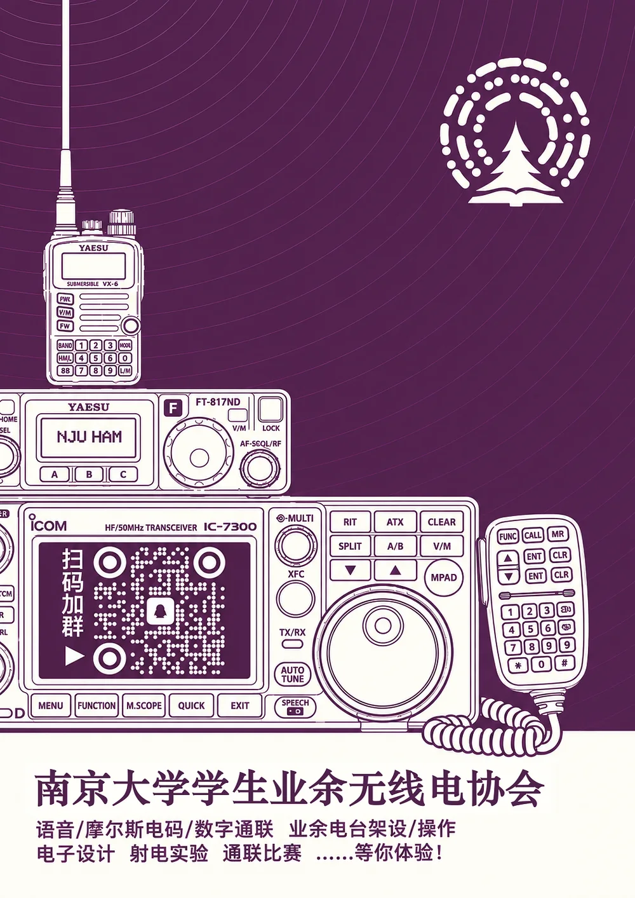
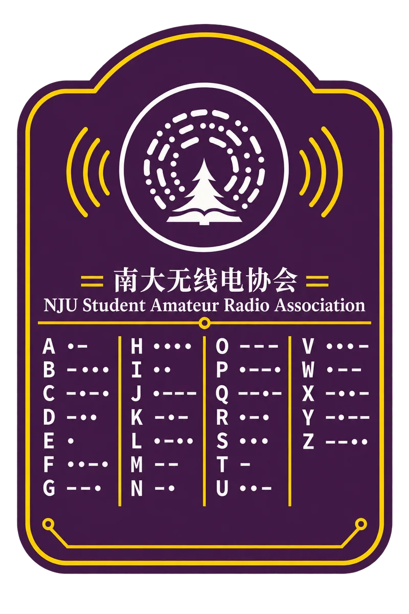

01
通联实践
短波、VHF/UHF、卫星与数字模式。从第一声 CQ 开始，学会在噪声里捕捉远方的回答。
01 ABOUT US
南京大学学生业余无线电协会（NJU HAM），是一群对电波、电子与远方保持好奇的人。
我们架设天线，在短波里等待来自另一个城市的回答；我们学习摩尔斯电码，用最朴素的方式穿过噪声；我们焊接电路、调试设备，也去操场做一场无线电测向。无线电不只是课本里的电磁学，它是可以亲手触碰、亲耳听见的世界。
无线电最迷人的地方，是你永远不知道下一个回答会从多远的地方传来。看看我们的日常

02 WHAT WE DO
从第一次按下 PTT，到独立完成一次远距离通联。我们把课堂里的知识，变成真正会飞的电波。
短波、VHF/UHF、卫星与数字模式。从第一声 CQ 开始，学会在噪声里捕捉远方的回答。
天线、巴伦、电路与电台调试。用烙铁和万用表，把一张图纸变成能工作的设备。
参加通联比赛与无线电测向，在限时呼叫、信号搜索和团队配合里，找到属于自己的节奏。
零基础讲座、摩尔斯电码训练、技术沙龙和备考互助。我们相信，最好的学习是一起 On Air。
03 BAND EXPLORER
不同的频率，有不同的脾气。选一个频段，听听它适合去哪里，又适合和谁相遇。
短波可以借助电离层反射，完成数百到数千公里的通联。夜幕降临，远方的呼号会变得格外清晰。
频段数据仅作科普展示。实际发射请遵守《中华人民共和国无线电管理条例》及操作证书权限。
04 FIELD NOTES
架台、值守、测向、合影。那些在风里和频率里发生的瞬间，值得被记住。点击照片，放大看看。
05 ZERO TO ON AIR
从第一次旁观，到拥有自己的呼号。我们会陪你走过这段从“听不懂”到“听得到”的距离。
参加入门讲座或例行活动，看看电台、天线和一群正在呼叫的人。
了解 A / B / C 类操作证书，和协会伙伴一起准备考试与设备。
在学长学姐带领下完成第一次通联，把呼号送进电波里。
去做天线、打比赛、追卫星，或只是深夜守听——由你决定。
06 OFF THE AIR
一张 QSL 卡片、一枚摩尔斯挂件、一场深夜架台。无线电文化有很多种样子，我们用自己的方式把它留下来。

“73” 是无线电爱好者的道别。
它的意思是：把最好的祝愿，留给你。
我们相信，技术也可以有温度。每一次回应、每一张卡片，都是人与人之间真实的连接。
当然可以。协会里大多数成员都是从零开始的。我们会从最基础的频段、呼号、通联礼仪讲起，也会带着你一起听、一起问、一起操作。你只需要带着好奇心。
入门阶段不需要。协会会在活动中提供可用的设备和器材，也会给出适合新手的设备建议。等你真正找到感兴趣的方向，再考虑自己的第一台手持台或短波台也不迟。
依法依规，发射需要相应的业余无线电台操作技术能力证明。协会会组织备考资料分享和互助学习，帮助大家了解 A / B / C 类操作证书的报考流程。在取得资质之前，可以先从守听和接收开始。
常规活动通常安排在课余时间，具体时间、地点和当周安排会提前在招新群和会员群公告。除了例行活动，也会有架台、比赛、讲座和临时起意的深夜通联。
08 JOIN THE FREQUENCY
2026 招新正在进行。扫码加入招新群，获取活动通知、入门资料和第一次架台的消息。
如果二维码过期，请在 QQ 中搜索群号加入。